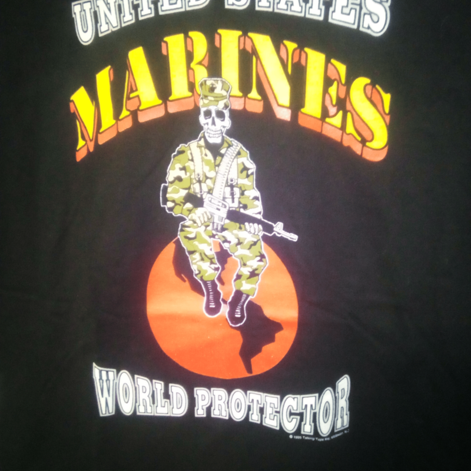
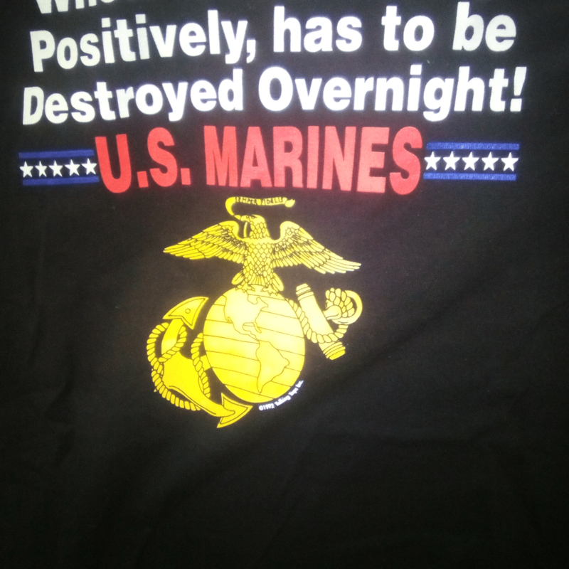
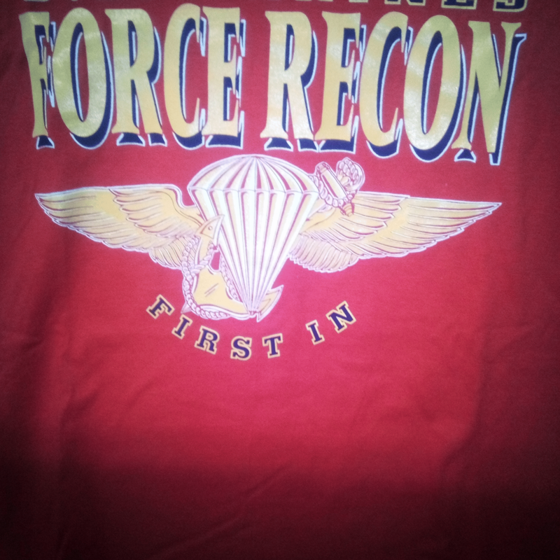
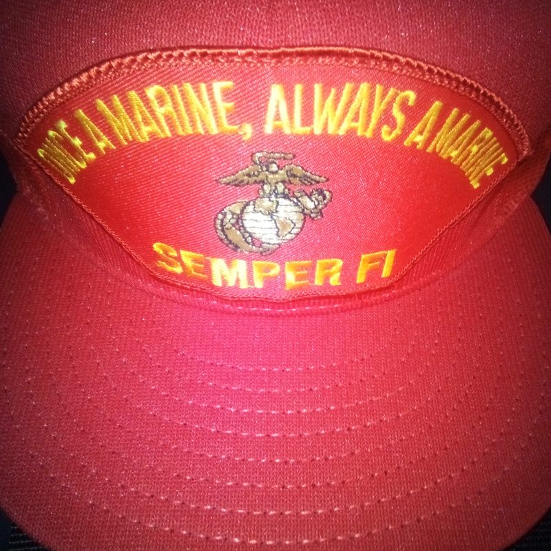
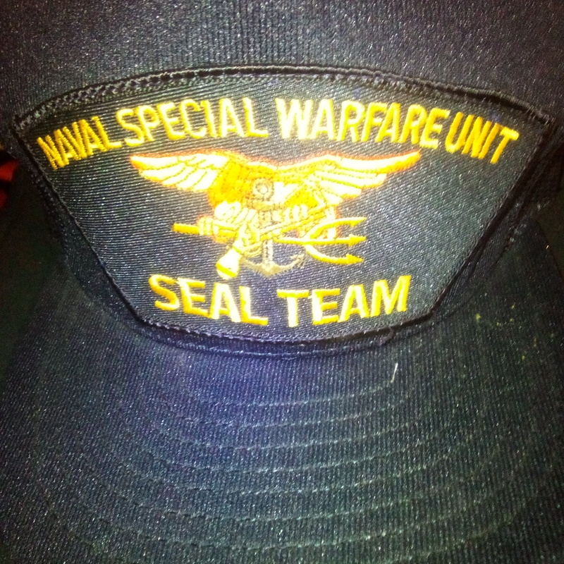
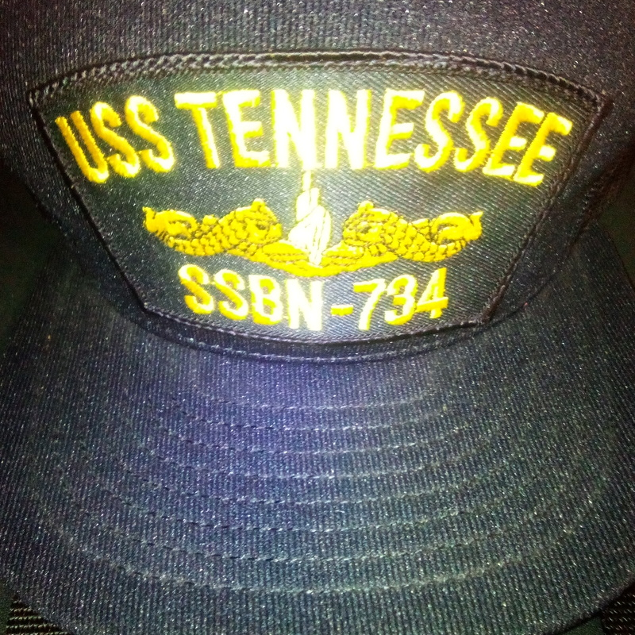
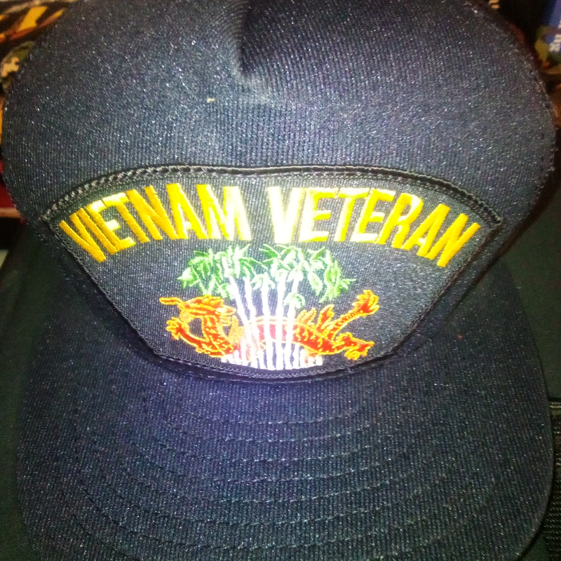
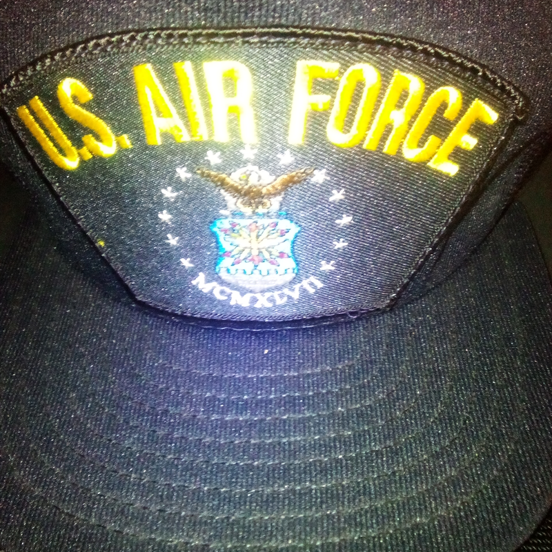
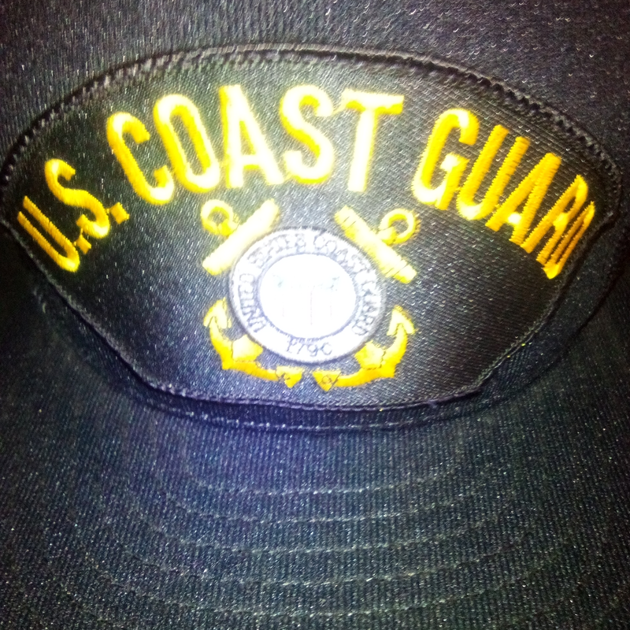

USMC World Protector Vintage Black Tee — XL
Skeleton warrior graphic symbolizing vigilance and global readiness. 100% cotton, made in the USA.
Vintage-style USMC, Navy, Air Force, Coast Guard, and Vietnam veteran caps and tees. Built by a US Army veteran, with 10–20% of every purchase supporting families affected by Agent Orange and fallen soldiers.
Each piece is made in the USA. Every product has its own secure Stripe checkout link, so select the item you want and pay directly.

Skeleton warrior graphic symbolizing vigilance and global readiness. 100% cotton, made in the USA.

Vintage Marine Corps tee with a gold emblem. 100% cotton, made in the USA.

Heritage-driven Force Recon design for Marines, veterans, and supporters.

Gold emblem on a red base. Adjustable mesh back, made in the USA.

Naval Special Warfare design with raised stitching and mesh vented sides. Made in the USA.

Gold lettering, raised stitching, and mesh vented sides. Made in the USA.

Navy cap with raised jungle dragon stitching. Made in the USA.

Soaring eagle emblem, arched white stars, and gold lettering. Made in the USA.

Gold lettering and Coast Guard emblem with mesh vented sides. Made in the USA.